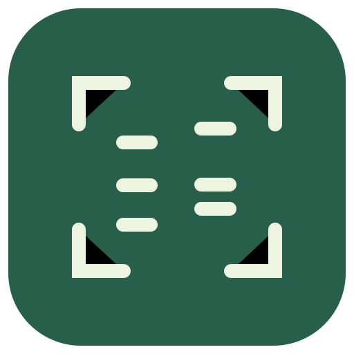
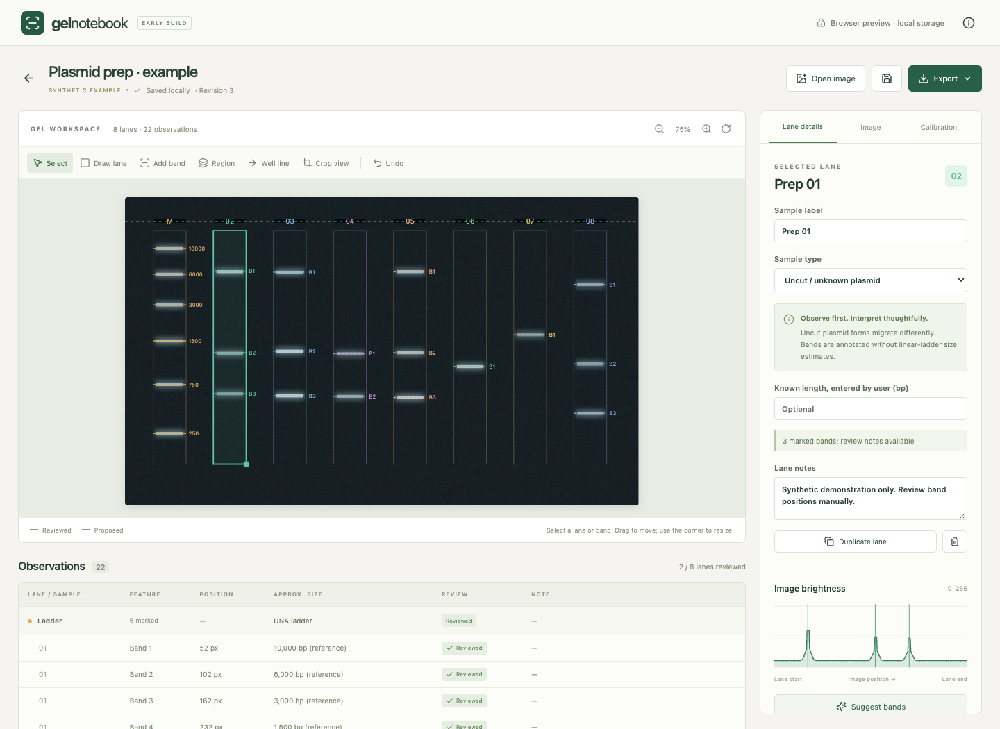
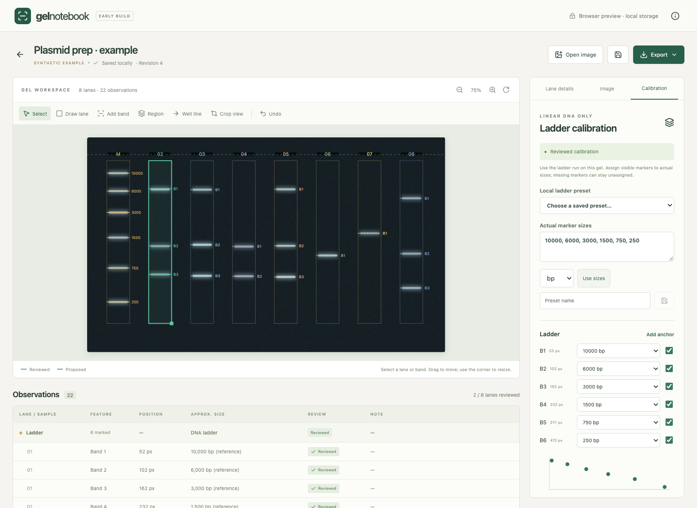

Editable lanes & bands
Draw and adjust lanes, mark bands or unresolved regions, add notes, and undo changes.

Gel Electrophoresis AnalyzerPersonal research-tool prototype · v0.1
A privacy-focused prototype for making electrophoresis images easier to analyze and interpret.
Built to support careful observation. Every result stays open to review.
01 / THE PROBLEM
Gel electrophoresis is commonly used to separate DNA fragments, but reviewing lane and band patterns manually can be repetitive. This project explores how image processing can assist with visualization and interpretation.
The prototype brings the image, lane profiles, and review notes into one workspace. It makes the steps of an analysis visible, while leaving interpretation with the researcher.
02 / HOW IT WORKS
Decode PNG/JPEG locally; preserve the original.
Define each lane manually in image coordinates.
Inspect brightness peaks; add or correct markers.
Record observations; save a PNG or CSV.
Optional sizing uses a manually assigned, reviewed same-gel ladder. Lane detection and ladder matching are not automatic.
03 / CURRENT CAPABILITIES
Implemented in the prototype.
Accuracy validation remains
pending.
Draw and adjust lanes, mark bands or unresolved regions, add notes, and undo changes.
Inspect lane brightness and propose bands with adjustable detection settings. Suggestions require review.
Experimental methodEstimate eligible linear-DNA sizes within reviewed anchors. Uncut plasmids remain annotation-only.
Approximate estimatesAutosave locally, recover a previous revision, and export annotated PNG or CSV with review status.
04 / INSIDE THE PROTOTYPE


At least four distinct, ordered, reviewed anchors are required. The prototype does not extrapolate beyond them.
PRIVACY BY DESIGN
All image processing is performed locally on the user's device, and images are not intentionally transmitted to external servers. The application has no upload service, analytics, or account integration.
Saved projects retain original image bytes, filenames, and notes. Local storage is not additional encryption. Native network-observation testing remains pending.
This portfolio page has no upload form, external fonts, analytics, or trackers. GitHub Pages receives ordinary page requests when hosting it.
ABOUT THE PROJECT
While working with molecular biology techniques, I noticed how much of gel interpretation involved repeated visual review and documentation. I built this personal prototype to explore a more organized workflow.
The engineering choices reflect that goal: preserve original coordinates, keep calculations separate from display adjustments, and make proposed versus reviewed observations explicit.
Next steps include assisted lane detection, more robust band suggestions, accessibility improvements, and broader testing. This is a personal project with no institutional endorsement.
LIMITATIONS & RESPONSIBLE USE
Image quality, distorted geometry, faint bands, and manual marker assignments affect results. Brightness is not DNA quantity, and approximate size agreement does not identify a sequence. Representative-image accuracy and native distribution checks remain incomplete.
This project is an experimental educational/research software prototype. It is not a clinically validated diagnostic tool and should not be used as the sole basis for scientific, medical, or clinical decisions.
SOURCE & PROJECT DETAILS
The public repository link will appear here after publication. Source code and setup instructions are included with this project.